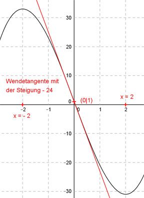

Aufgabe 66 Der Graph einer ganzrationalen Funktion 3. Grades hat im Punkt (0|1) eine Wendetangente mit der Steigung -24, und Hoch- und Tiefpunkt liegen jeweils zwei Einheiten von der y-Achse entfernt. Wie lautet seine Funktionsgleichung?  Allgemeine Form einer ganzrationalen Funktion 3. Grades: f(x) = ax3 + bx2 + cx + d f’(x) = 3ax2 + 2bx + c f’’(x) = 6ax + 2b 5 Bedingungen: 1. Hat im Punkt (0|1) (dem Wendepunkt) eine Wendetangente mit der Steigung -24 bedeutet erstens: f(0) = 1 --> a * 03 + b * 02 + c * 0 + d = 1 --> d = 1 2. Hat im Punkt (0|1) (dem Wendepunkt) eine Wendetangente mit der Steigung -24 bedeutet zweitens: f’’(0) = 0 --> 6a * 0 + 2b = 0 --> 2b = 0 | :2 --> b = 0 3. Hat im Punkt (0|1) (dem Wendepunkt) eine Wendetangente mit der Steigung -24 bedeutet drittens: f’(0) = -24 --> 3a * 02 + 2b * 0 + c = -24 --> c = -24 4. Sein Hoch- und Tiefpunkt liegen jeweils 2 Einheiten von der y-Achse entfernt bedeutet zum einen (c = -24 eingesetzt): f’(2) = 0 --> 3a * 23 + 2b * 2 - 24 = 0- -> 12a + 4b - 24 = 0 I 5. Sein Hoch- und Tiefpunkt liegen jeweils 2 Einheiten von der y-Achse entfernt bedeutet zum anderen (c = - 24 eingesetzt): f’(-2) = 0 --> 3a * (-2)2 + 2b * (-2) - 24 = 0 --> 12a - 4b - 24 = 0 II I + II 12a + 4b - 24 = 0 12a - 4b - 24 = 0 ------------------ 24a - 48 = 0 |+48 24a = 48 |:24 a = 2 Gesuchte Funktionsgleichung: f(x) = 2x3 - 24x + 1